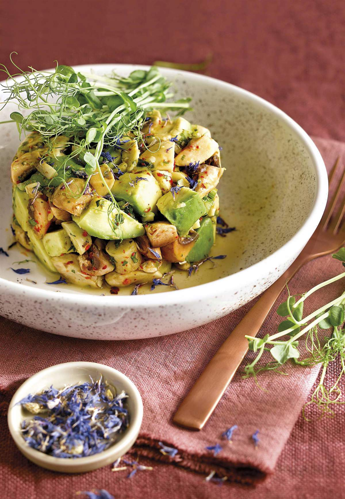

Ceviche de champiñones y palta

Ingredientes
- 450 g de champiñones
- 10 ml de zumo de limón
- Ají picante a gusto
- 20 g de apio picadito
- Un puñado de hojas de cilantro picadito
- 45 ml de aceite de oliva
- 1 cucharadita de sal
- 1 palta
Preparación
- Lavar y cortar los champiñones en láminas.
- Mezclar los champiñones con el zumo de limón, el ají picante, el apio y el cilantro.
- Añadir el aceite de oliva y la sal, y mezclar bien.
- Dejar reposar en la nevera por 30 minutos.
- Cortar la palta en cubos y añadir justo antes de servir.
Volver a las recetas